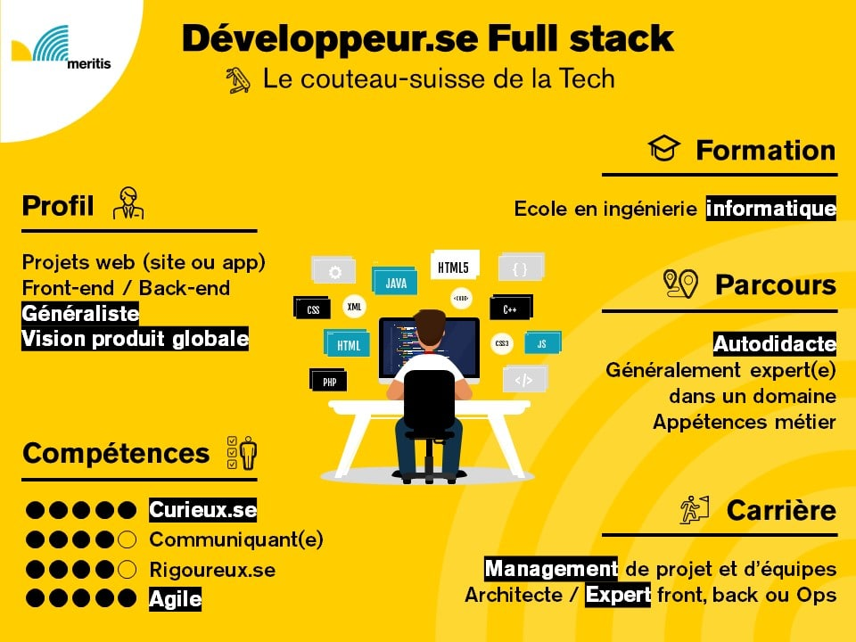

Le développeur full-stack a pour principale mission la programmation d'une application ou d'un site : il est à même de le concevoir de A à Z (création, développement, codage, etc.). Il a des compétences dans tous les domaines : back-end, front-end, UX/UI, architecture…
Le développeur full stack possède généralement un diplôme de niveau bac + 2 (BTS ou DUT informatique). Il a la possibilité de suivre des formations courtes pour apprendre les langages et codes informatiques indispensables pour exercer la fonction.
|  |